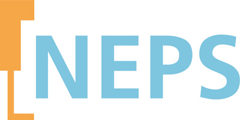

I lead questionnaire development, data collection for Starting Cohort 8, and coordinate collaboration projects for the National Educational Panel Study (NEPS), Germany's largest long-term educational study tracking over 70,000 participants' competencies and educational trajectories from early childhood to old age.
What is NEPS:

Who is LIfBI:
I was a postdoc research associate for NEPS, optimizing questionnaires (e.g., teacher/principal, student scales), managing quality control, and coordinating collaborations with internal (IFS, TU Dortmund) and external partners (IQB, Infas, IEA) alongside project management.
NEPS data, though open-access, is vast and complex. My familiarity with its structure allowed me to efficiently develop tools using R and Mplus, leading to six publications in collaboration with others within a year after leaving LIfBi.
I also optimized the online survey UI, coordinating discussions on responsive design, answer arrangement, and user navigation for different groups (e.g., students, principals).
For Starting Cohort 8, we aimed to explore new concepts by adapting existing scales. This required collaboration with Infas to modify the interview schema for follow-up studies to meet new needs.
For a large-scale project like NEPS, understanding stakeholder needs is key. While new scales are rarely developed, evaluating and adapting existing ones is crucial. Cost estimation and concept prioritization support decision-making. In the telephone interviews with dropouts, challenges included data privacy (especially with minors) and designing branching logic. Collaborating with Infas and the data privacy team, I successfully addressed these issues.
New concepts were successfully integrated into the study with high quality, and the interview study was effectively implemented.
As a postdoc, publishing was essential—but beyond papers, the goal was to uncover insights hidden in vast longitudinal, multilevel data. This involved understanding, cleaning, and repairing data (e.g., handling missing class IDs), uncovering relationships, selecting suitable methods, and presenting findings to others.
A variety of statistical methods/models were applied, including cross-lagged panel models, random intercept CLPM, change-on-change models, latent growth curve models, and latent profile analysis. Here are some examples.
The same codes and methods—such as cluster or factor analysis, multilevel regression, predictive modeling, and mixed-effects modeling—apply to topics like product demand forecasting, brand perception, customer satisfaction and loyalty analysis, sentiment tracking, segmentation, and attitudinal or behavioral analysis.
NEPS recruits voluntary participants, so arranging concepts in an engaging way and designing an inviting online survey UI are crucial, especially with many stakeholders and a wide range of concepts.
Key UX decisions included the arrangement of options (horizontal vs. vertical), adapting layouts based on option type, number, and device, setting time-outs, and using a navigation bar with an exit option. With limited budget, quick decisions were made based primarily on secondary research and literature from similar contexts and target groups.
By summarizing literature and analyzing small sample test data, we made informed decisions to optimize the UX/UI of the surveys.